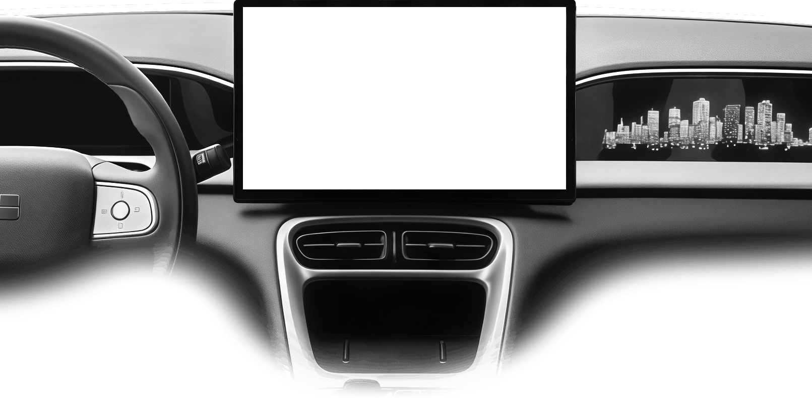

Обзор
Батарея, запас хода, 12 В, температура, климат, расход и пробег.
EX2ToolsIV — локальный набор инструментов для Geely EX2: телеметрия, климат, голосовое управление, виджеты, звуки, работа с приложениями и сервисный режим.

Всё, что нужно для повседневной работы с ГУ, собрано в одном приложении.
Батарея, запас хода, 12 В, температура, климат, расход и пробег.
Температура, обдув, вентилятор, рециркуляция, обогрев стёкол, сидений и руля. Режим езды и рекуперации.
Офлайн-распознавание, активация по кнопке на руле или «Слушай Джили», команды для климата, окон, звука и приложений. Поддерживает добавление своих команд
12 виджетов, отдельный размер каждого, общая прозрачность, часы с датой и выбором шрифта.
10 встроенных звуков блокировки автомобиля и возможность загрузить свой.
Установка APK, разрешения, установка по QR, скрытие приложений. Сервисный режим и восстановление.
Приложение не обращается к внешним серверам, не проверяет обновления и не загружает исполняемый код. Обновление — только вручную: собрать или скачать APK, проверить хэш и установить.